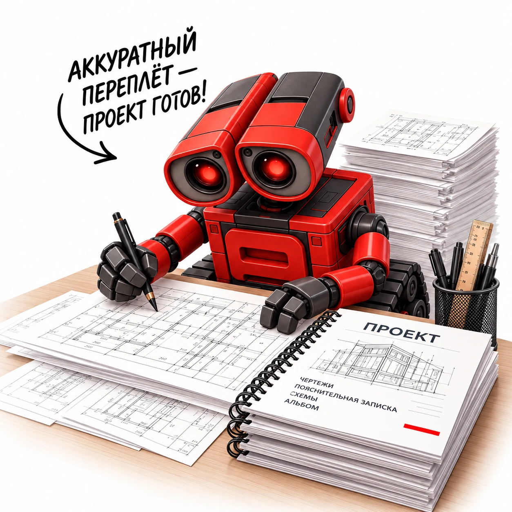
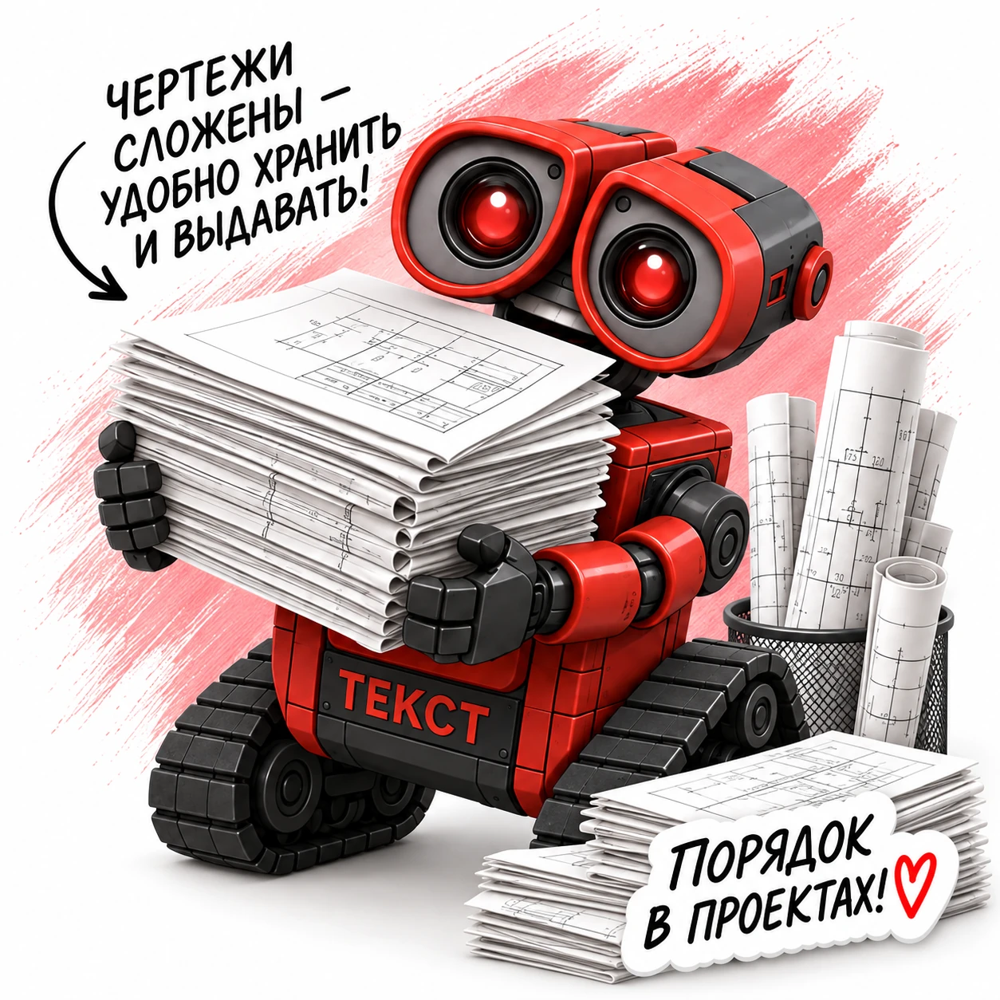
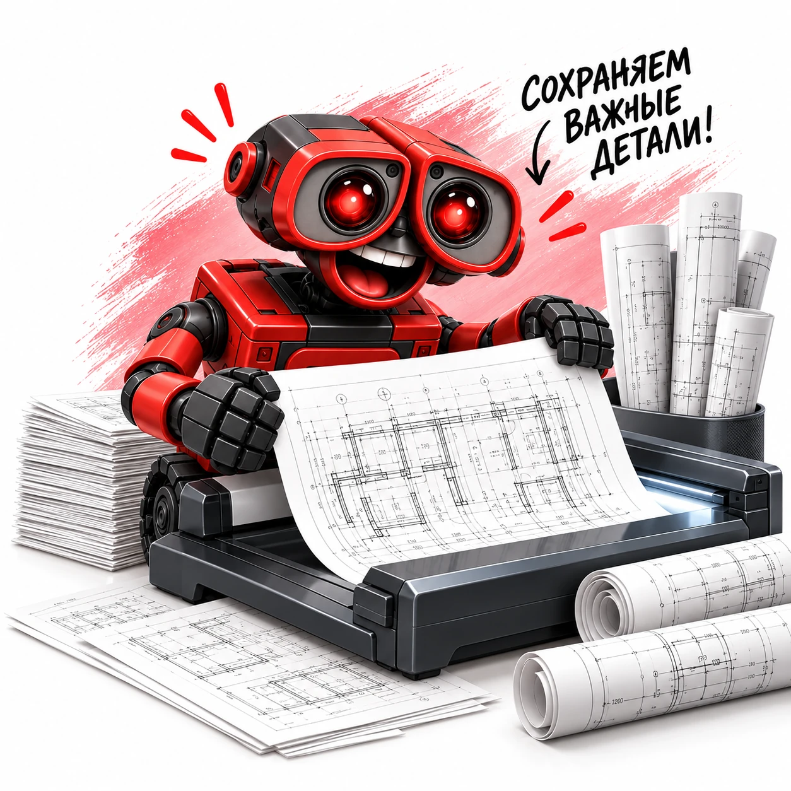
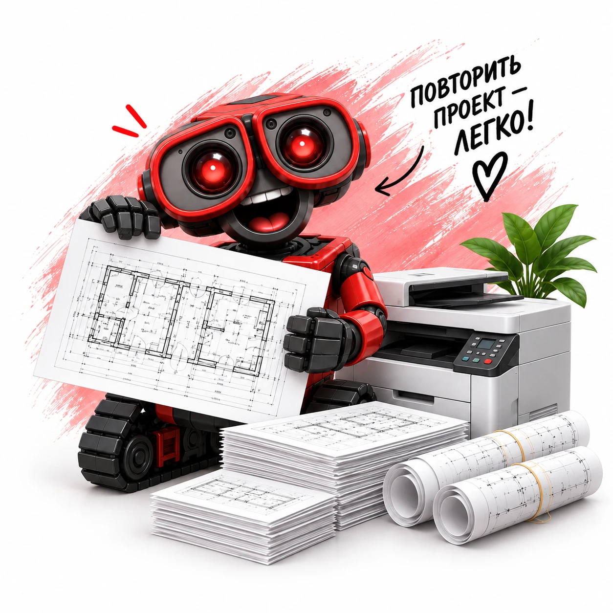
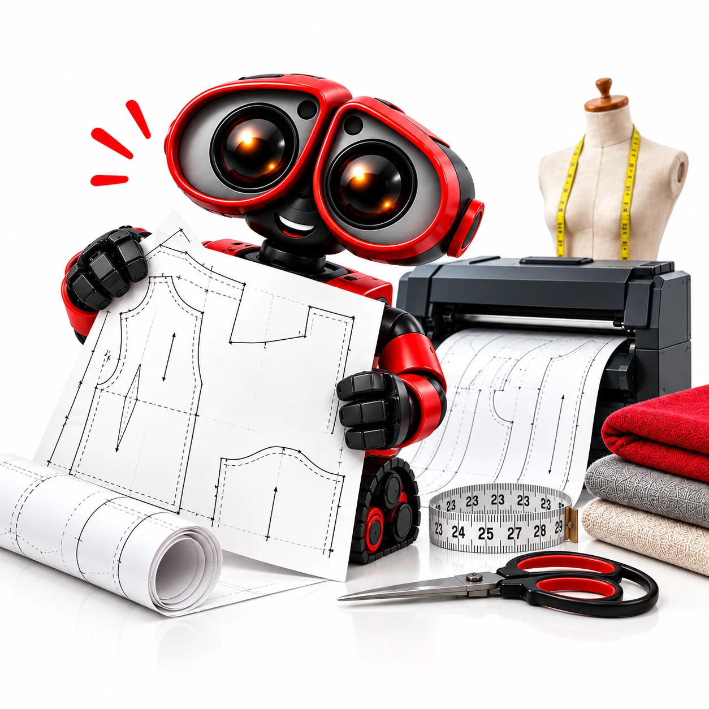

Стоимость онлайн
Параметры и состав цены перед заказом
Смешанные форматы, фальцовка, брошюровка и несколько комплектов считаются в одном сценарии. После сборки заказа можно выгрузить PDF и внутренний Excel.
Параметры и состав цены перед заказом
Файл или оригиналы согласуем до работы
Барнаул, Строителей, 11 · отправка по России
Выберите услугу, рассчитайте параметры и соберите заказ в общей корзине.
 Брошюровка проектной документации
Брошюровка проектной документации
Фальцовка чертежей по ГОСТ
Сканирование чертежей
Копирование чертежей
Печать дизайн-проектов Печать лекал и выкроек
Печать лекал и выкроек
Выберите задачу — подскажем подходящую услугу и параметры.
Укажите форматы и цветность каждой группы листов, фальцовку и брошюровку
Выбрать услугуОтдельный расчёт по формату, пружине, диаметру и количеству комплектов
Выбрать услугуСтандартные и удлинённые форматы; размер после сложения согласуем
Выбрать услугуОригиналы до A3; крупные форматы требуют отдельного согласования
Выбрать услугуГотовые варианты для расчёта. Откройте пример и измените параметры под свой заказ.
Откройте калькулятор на странице услуги. Укажите формат, материал, количество и дополнительные работы.
Добавьте позиции в корзину и скачайте общий PDF с параметрами и ценами. Отправьте его и файлы в студию.
После согласования и оплаты выполним работу. Самовывоз в Барнауле или согласованная доставка.
В инженерной печати и копировании задайте каждый формат и цветность отдельной строкой. В дизайн-проекте также выбирается бумага. Количество листов указывайте суммарно на весь заказ.
Да, в инженерном калькуляторе эти работы рассчитываются вместе. Для готовых листов доступны отдельные услуги фальцовки и брошюровки. Добавляйте в корзину только необходимые позиции, чтобы не посчитать обработку дважды.
Только оригиналы A4 и A3. Крупноформатное сканирование A2, A1 и A0 не предлагается. Способ работы с большим бумажным оригиналом нужно согласовать заранее.
Подготовьте PDF с верным размером страницы и контрольным размером, укажите масштаб и печать без вписывания. Для выкроек требуется масштаб 1:1.
Ориентир — один рабочий день на каждые 25 000 ₽ с округлением вверх после полного согласования. Подготовка файлов и доставка согласуются отдельно.
Отправьте PDF и ведомость на tekkkst@yandex.ru, в Telegram или MAX. Готовый заказ можно забрать на проспекте Строителей, 11 в Барнауле; доставка согласуется со студией.
Для инженеров, проектировщиков, архитекторов и ПТО: печать отдельных чертежей и комплектов A4–A0 с выбором цветности, фальцовкой и брошюровкой. Сканирование чертежей доступно только до A3. Стоимость зависит от формата, состава комплекта и обработки.
Изготавливаем комплекты чертежей и проектной документации в Барнауле. В одном расчёте можно собрать листы разных форматов, определить необходимость фальцовки и брошюровки. Подготовленные комплекты упакуем для согласованной отправки заказчику.
Откройте калькулятор этой страницы, проверьте стоимость изготовления, загрузите макет и перейдите к оформлению заказа. Выбранный населённый пункт сохранится для корзины. · Города и населённые пункты
Сканирование бумажных чертежей выполняем только до А3; широкоформатное сканирование не заявляем.
Подробности: доставка и получение заказа.
Полезные статьи и подготовка к печати
Да. В калькуляторе проектной документации можно добавить несколько позиций с разными форматами и тиражами. Фальцовка и брошюровка рассчитываются отдельно согласно выбранным параметрам.
Передайте файлы и укажите количество комплектов, порядок листов, переплёт и требования к упаковке. После согласования параметров изготовления и способа получения оформляется заказ.